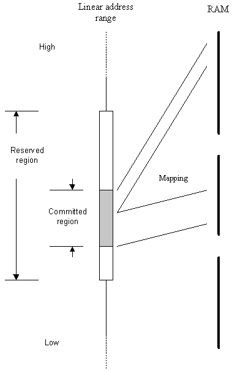

|
| |
Chunks map RAM into contiguous linear addresses.
A chunk consists of a reserved region and a committed region. The reserved region is the contiguous set of linear addresses which may be occupied by the chunk. The committed region is the region in which RAM is actually mapped. The size of a chunk is dynamically alterable, allowing the committed region to vary in size from zero up to the reserved region size, in integer multiples of the processor page size. This allows processes to obtain more memory on demand. Generally the committed region starts at the bottom of the reserved region.
It is also possible to create double-ended chunks, where the committed region is any contiguous subset of the reserved region, with size equal to an integer multiple of the processor page size. These chunks can have both the bottom and top of the committed region altered dynamically.
The following diagram illustrates the mapping of linear addresses to RAM.

Mapping a linear address range to RAM.
A chunk has a maximum size, which is defined when the chunk is created. The reserved region can be smaller than the maximum size. However, if the chunk is required to grow to a larger size than the reserved region size, the reserved region can be reallocated to allow it to grow; The reserved region can grow up to the maximum size of the chunk.
A chunk is local if it is private to the process creating it and is not intended for access by other user processes.
A local chunk does not have a name.
|
A chunk is global if it is intended to be accessed by other processes.
Global chunks have names that can be used to identify the chunk to another process wishing to access it. A process can open a global chunk by name; this maps the chunk into the process address space, allowing direct access and enabling the sharing of data between processes.
If the name of the global chunk to be opened is known, use
RChunk::OpenGlobal(). If a part of the name is known, use the
RChunk::Open() variant that takes a
TFindChunk.
Copyright ©2002 Symbian Ltd. 6.1-00174 |
|